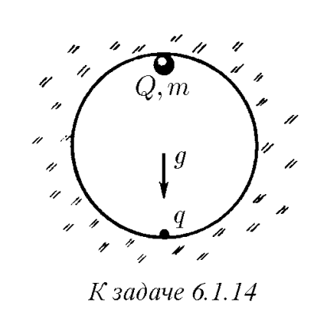
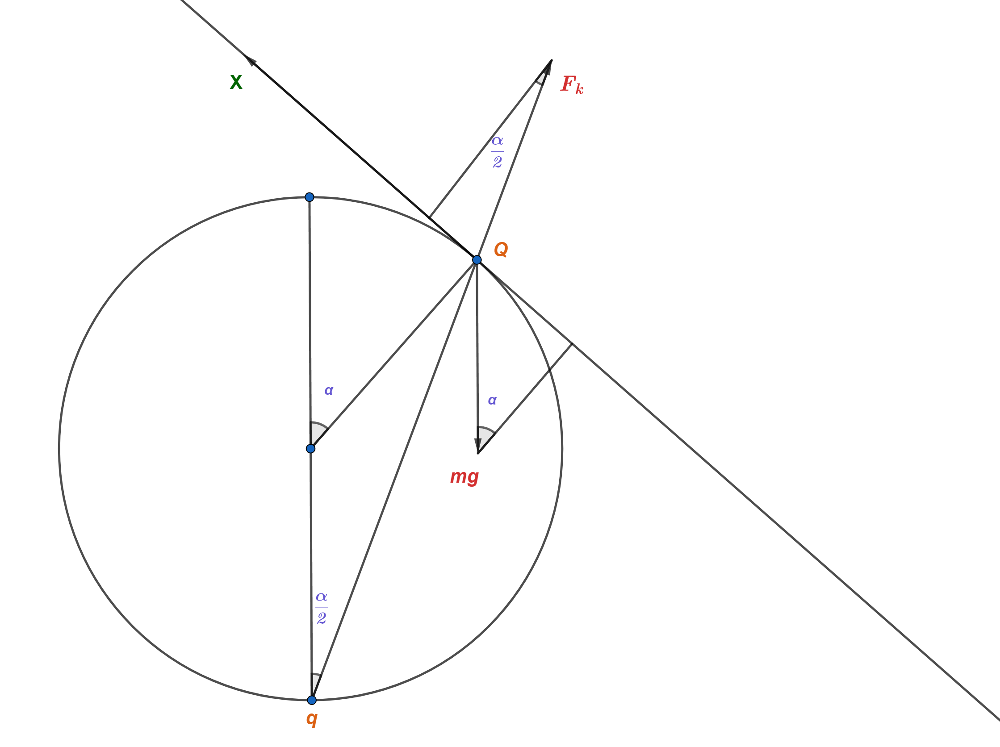
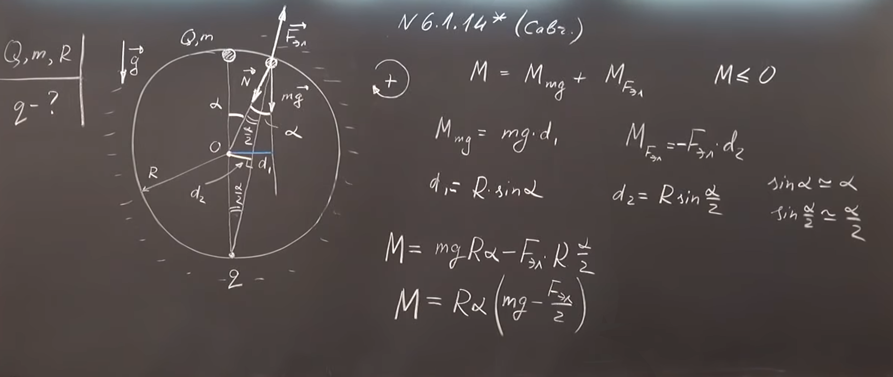
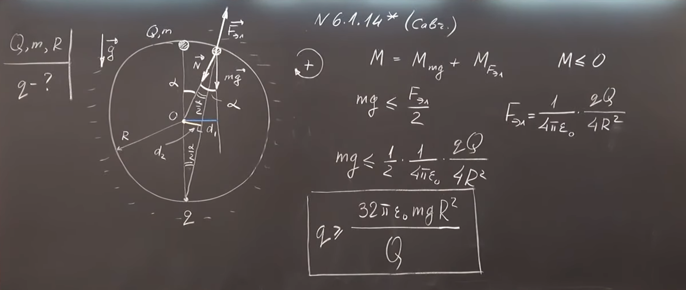
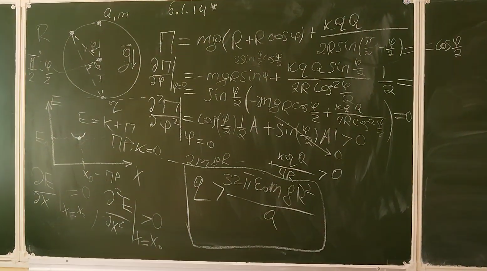

Условие:
\(6.1.14^{∗}.\) Какой минимальный заряд \(q\) нужно закрепить в нижней точке сферической полости радиуса \(R\), чтобы в поле тяжести небольшой шарик массы \(m\) и заряда \(Q\) находился в верхней точке полости в положении устойчивого равновесия?

Решение:
Если решать данную задачу как $F_k=mg$, то вы получите неверный ответ, т.к. такое равновесие будет неустойчивым. Для проверки устойчивости необходимо отклонить шарик на малый угол $\alpha\longrightarrow0$ и рассмотреть, при каких q будет возникать возвращающая сила.Следует заметить, что при малых отклонениях силу Кулона можно считать постоянной ($F_k=const=\frac{1}{4\pi\varepsilon_0}\frac{qQ}{4R^2}$), $\sin{\alpha}\approx\alpha$.

Рассмотрим проекции сил на ось $Ox$, параллельную касательной к сфере в точке контакта с шариком (наклонена под углом к $\alpha$ горизонту):
$(mg)_x=-mg \cdot \sin{\alpha}$
$(N)_x=0$
$(F_k)_x=F_k \cdot \sin{\alpha /2}$
В данном случае сила Кулона должна быть существенно больше mg, т.е. шарик не упадёт, но может скатиться по стенке, а значит равновесие будет являться устойчивым, если сумма проекций всех сил на $Ox$ будет >0
$F_k \cdot \sin{\alpha /2}-mg \cdot \sin{\alpha}=0$
$F_k=mg \cdot \frac{\alpha}{\alpha /2}$
$\frac{1}{4\pi\varepsilon_0}\frac{qQ}{4R^2}=2mg$
$q=\frac{32\pi\varepsilon_0mgR^2}{Q}$
Альтернативное Решение:


Альтернативное Решение:
